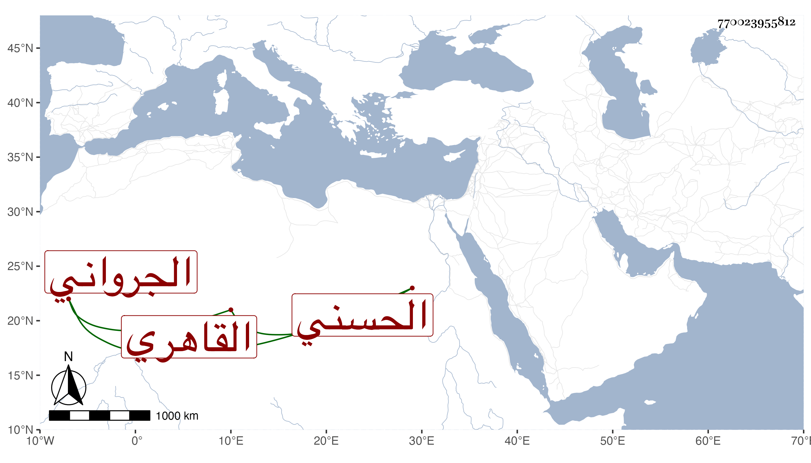

0902Sakhawi.DawLamic.ITO20230111-ara1.EIS1600.770023955812
Biography ID: 770023955812
568
محمد بن محمد بن محمد بن عبد الله بن عبد المنعم المحب بن الصدر بن الشهاب الحسني الجرواني القاهري ابن عم الجلال محمد بن أحمد بن محمد بن عبد الله النقيب . تكسب بالشهادة دهرا رفيقا لابن صدر الدين وغيره في مجلس باب القوس داخل باب القنطرة وغيره وكان جريئا متجاهرا انقطع بالفالج مدة تقارب خمس عشرة سنة إلى أن مات في منتصف صفر سنة تسع وثمانين ولولا ما وصل إليه من ميراث ابن عمه في أثناء المدة لانكشف حاله وعسى أن يكفر عنه رحمه الله وسامحه وإيانا .
